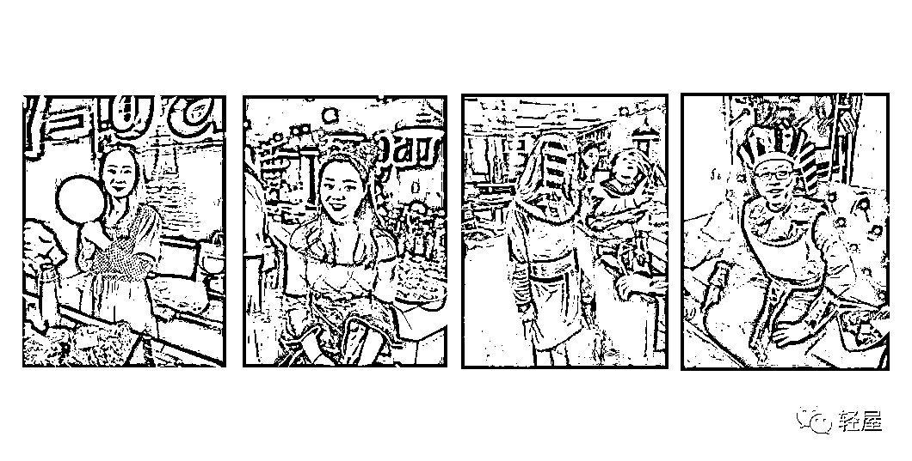

来源：https://sv5wqvnml89.feishu.cn/docx/Vg6Ldm6sjo5CRZxcaKPcqxBhnOc
还有两个月就年底了，很多公司都在准备开年会，很多老板都把这件事交给行政去办，自己当甩手掌柜，到时露个面颁个奖就完了，其实大错特错，年会是一年当中老板最好的表现机会。老板，应该把很大一部分精力放在年会，要做年会的总操盘手。
大家好，我是昊布斯，坐标西安，从事企业展厅和展览展示业务。
今天这篇文章，以我的公司2019年举办的年会为例，为你拆解，作为老板，如何用一场年会凝聚人气，收买人心，让明年火力全开。
为什么很多员工，你开完年会发完年终奖，他们就离职了？为什么你为了年后花了大价钱，租的豪华酒店，买的海鲜大餐，准备的抽奖，老板自嗨的上了头，咔咔拍照，朋友圈发不停，但第二天你偷偷的去点开员工的朋友圈，一条动态也没有。
你好心好意在大群里说，兄弟们走，今天高兴，带大家去喝酒！本以为大家欢天喜地，员工告诉女朋友“操！回不去了，今天又得陪老板去吃饭”，然后默默的把本想说的“妈的”删掉，改成了“好的”。
很多人以为工资就是薪酬，实际上薪是物质，酬是精神，只有物质没有精神，或者只有精神没有物质都不行。谈恋爱时女孩经常说，要么给我钱，要么给我爱，要么给我滚！员工也一样，刚开始的时候没钱就想要钱，有了钱之后，还想要有感觉。
马云说，员工离职只有两种原因，要么是钱没给够，要么是干的不开心。上篇文章我们讲了年终奖的发放方式，具体见 这是物质，是薪的部分；今天我们来说说，年会作为这一年复盘的重要时刻，如何托起员工的精神。
有些老板经常会说我的员工死气沉沉的，我说你撒泡尿照照自己啥样。如果一个老板每天都是死气沉沉的，这个员工即使今天很开心来上班，看到老板那张脸，他也跟着默哀。因为他说老板心情这么不好，如果我这么开心的话，他一定会找我麻烦，所以他也跟着心情不好，结果整个公司看上去就是活死人墓，对不对？
如果说你天天都是愁眉苦脸的，就像谁烧了你房子占了你家地似的，员工私底下会议论，你看老板连笑容都没有，压力那么大，估计咱们公司最近遇到了过不去的坎儿，可能都快不行了，要不我们走吧？他说有道理，于是相约离职。
反过来，如果说你每天都是精神状态好的不得了，哪怕外面很多人都说你们公司下个月都要倒闭啦，员工会怎么说？我看老板的状态不像啊，如果咱们公司要倒闭，老板肯定是愁眉苦脸的，为什么老板状态这么好呢？一定是骗人的。这样的话，就算你公司真的要倒闭了，如果你状态依然很好，员工有没有可能都愿意待下来？
给大家看一下一张照片，女扮男装，这是阿里巴巴八周年的时候，马云扮成白雪公主，她的七个高管，扮成小矮人？上台表演节目给大家，大家一看，哇，老板都疯了，我们是不是也疯了？
在我们印象当中，马化腾是不是很腼腆，但是马化腾他在公司年会的时候也是这么夸张，我还见过他在台上跳舞，这个简直都想象不到，有人说腾讯的年会让我参加一次的话，不要工资，我都愿意免费在公司干一年。说明这个公司是多么的快乐。
所有大公司的老板，他们都是很有激情的，我有个朋友在微软公司上班，他说微软最辉煌的时候，有一次年会，全球3万多个销售精英荟聚在夏威夷，公司有三个人戴着面具，一个高的，一个瘦的，一个胖的，在台上跳踢踏舞，跳的一塌糊涂，别提多难看了，结果员工就在下面吐槽，公司是不是今年经费紧张，怎么找这三个水平这么次的人表演给我们看，结果跳完之后把这个面具一拿下来，大家一看傻了，原来是老板。一个是比尔盖茨，一个鲍尔默，一个首席财务官，大家都疯了。
所以钱是玩出来的，生意都是玩出来的。大家来星球是来学习的还是来玩的？如果说你来学习的，那你就会很辛苦，要头悬梁锥刺股，对吧？但是如果来玩呢？那就不一样了，对不对？当你在玩的时候，你是不是状态很好？
大家打游戏，是不是马上通关的时候就会有一个超级怪物BOSS出现？怪物越难打，那就说明马上要通关了，对吧，当你以玩的心态，人生无论碰到什么样的挑战，你都可以乐观积极的去面对。公司也一样，如果能够保持一个快乐的氛围，大家自然就会很绽放，大家很绽放，结果自然就会比较好。
言归正传，在年会的前一个月，我做了准备工作，当别的老板都在忙着约着给客户送礼的时候，我一天跑了几百公里来到了员工的家中送礼，有些远的和不方便去的员工家里，我亲自打了电话加了微信，视频拜年。
因为我深知，一家企业要想做大，靠老板一个人的力量是远远不够的，客户不是老板去服务的，而是员工去服务的，老板一个人的时间和精力是有限的，相信如果老板来服务客户的话，要么客户服务不过来，要么客户数量不会增加。不管出现哪种情况，都只有一个结果，那就是——企业消失了。
员工的父母很多都是普通的农民，大概从来没有遇到过来家中拜年的老板，受宠若惊，早早就来到路口迎接，迎入家中，沏茶倒水，敬为上宾。父母都是老实人，没有华丽的词藻，聊着孩子的过去，打听着孩子在公司的表现，和希望老板能对他们严格要求，其实父母能意识到，老板是器重他们的孩子才来到家里的，因此交谈中一直笑的合不拢嘴。
父母深深的皱纹中难以隐藏生活的不易，有的父母在西安工地上做工，有的父母在县城的厂子上班，都是赚的辛苦钱，有的家庭还有突发疾病需要花钱，甚至花掉了准备买房的钱。钱这么难赚，家里老老小小的最需要的就是钱，可父母从未提过想让孩子多赚多少钱，他们希望的只是孩子能多学东西，能健康平安，能过得好…
父母就是孩子的一面镜子，父母是什么样的，孩子就是什么样的，父母开朗外向，孩子也爱说笑，父母实在低调，孩子话也不多，无论什么样的父母，都是最爱你们的，都是最无私的。
以前看新闻联播，没有看懂，不知道领导人为什么要深入寻常百姓家，这次家访后我懂了，朱门酒肉臭，路有冻死骨，只有了解了百姓的疾苦，才能抗起国家的责任；只有了解员工的生活，才能撑起起公司的使命，我身上的担子更重了，那是一份责任，我的肩膀，承载着几十个员工背后几十个家庭的希望，承载着几百个家庭的未来。
其实，只有业绩倍增，哪来的身心解放，你做100万的公司，就有100万的事情，你做1000万的公司，就有1000万的事情，你做一个亿，就有更多的事情需要你做。
你做好了，万人公司也不觉得累，你做不好，一人公司也会身心俱疲，备受煎熬。修身，齐家，治国，平天下，事业是靠团队一起做起来的，所以，请照顾好你的员工吧。
家访时，我做了一件事情，为每位员工的父母录制了一段视频，内容就是他们想对子女说的话，对子女的祝福，以及来年的期待，外省的父母，我就请他们自己录制后发给我，他们从来没有录制过这样的视频，所以真诚中带有几分羞涩，结尾无一例外的说到了：“孩子你们跟着这样的老板有福气，你们一定要好好干。”父母一句，顶老板一万句。
这一切，都是秘密进行的，我也请员工的父母帮我保密，然后，这些视频我让人剪辑合成了一个令在场所有人动容流泪的长视频，前半部分是烘托氛围，后半部分是祝福，击中所有人的泪点。如果你们也想制作，可以点击观看，找找感觉。
再回过头说一个误区，很多老板理所当然的认为，年会就是给几天排练时间，员工表演节目，领导坐下面鼓掌，员工听你的认真排练，但其实心里怎么想，凭什么呀，你给老子付表演费了吗？我们说，要想让群众的心和你在一起，你必须走到群众中去。
就像刚才说的几位大佬，表演节目老板必须亲自出马，身先士卒，所以，我给这次年后定调为cosplay，在某宝买了埃及法老的服装，每人一套。由行政与每个人沟通后，确定了节目单，然后有我参与的节目我和大家一起设计排练。
下面是具体的年会流程：
公司员工陆续进场（领取轻屋贴纸）→ 背景板位置拍照签到
银总映客直播。行政负责全掌机
合照之后挑选自己喜欢的cos服装更换上。

小米公司《参与感》这本书中，鼓励引导每个员工每个用户成为”产品的代言人“。做内容运营要遵循”有用情感和互动“的思路，只发有用的信息，避免信息过载，每个信息要有个性化的情感输出，要引导用户来一步一步参与互动，分享扩散。年会也应用了这一原则，行政为每人录制了一段话，放在年会开始时播放。
日常的素材积累很重要，很重要，很重要！每年都会进新人，他们并不了解老板，把这一年每个人手机里关于公司发生的大大小小有趣有意义的镜头记录下来，在年会播放，可以让新人更立体的了解公司和团队，增加大家对公司的凝聚力。
这里最好是男女搭配，介绍公司领导后，也介绍下到场嘉宾（如果有），我们当时邀请的是合作伙伴，这里建议邀请客户为佳，一是展示公司实力，二是表示对客户的感激和尊重。
领导致辞是奠定全场基调的，不要套模板，一定要讲出自己内心的独白，占领员工的心智，以下是我当时的发言稿 ，供大家参考：
我的致辞：
尊敬的各位领导，各位来宾，家人们，新老朋友，大家晚上好！
大家能在百忙之中来参加轻屋年终盛宴，我们再次以热烈的掌声欢迎大家的到来，谢谢你们！
转眼间，我们一起走过了2018年，即将面对2019年新的生活和工作，看着每一位同事和战友，从当初加入公司稚嫩的脸庞到今天越显成熟，从年初我们彼此陌生走到今天亲密一家人，这期间，有争执，有分歧，有感动，有互助，这每一份拼搏奋斗的记忆，每一个成长的点滴故事，我都铭记在心，虽然我们平时没有太多的言语和大家过多交流，但我却时刻感恩，感谢因为有你们的添砖加瓦，轻屋才能一步步走到今天，感恩大家长期以来默默的支持和理解，感谢大家的辛苦付出。
昨天我听了马云在达沃斯论坛上的讲话，忽然感觉我们和马云有共同点，我们的团队和阿里巴巴也有很多共同点，我和马云爸爸：英文都很好，个子都不高，都爱学习；我们的团队：初期人都不多二十个左右，地方都不大，凝聚力都特别强，所以，我们具备了成为阿里巴巴这样企业的基本条件，大家说对吗？
在工作中我还有很多的不足和缺点，但是我和在座的各位一样，都有一个不怕困难，迎难而上的拼搏精神，包括昨晚凌晨两点，我都在想，坚持做这家公司的目的是什么？回想当年是我一个人的梦想，是对生命的不甘平凡，走向创业的道路。在这个过程中，我也在不断成长，也慢慢清晰自己到底想做什么，借着这个年会，我想和大家分享下，接下来，2019年我们轻屋的二大发展之路。
第一大发展之路：对内成就员工。
因为只有玩才能开心，开心才能提升工作效率，工作效率提高了自然就能赚到钱，2019年，我要让大家玩的更开心，把每一份工作都变成游戏，增加团建活动，提升大家的幸福感！
过去的我，因为个人能力不足，所以在这个过程中不断邀请优秀的大家加入轻屋共谋发展，同时我也学会照镜子、揪头发，反思自己，不断提升，这一年来，我去了苏州和重庆8次，共花费了40万学习企业管理知识，来打造学习型团队，但我想，就这一点成就是不够的，真正的成就，一定是你中有我，我中有你；真正的成就，一定是，敢于要求你成长，让你综合工作能力提高后，把你变成公司需要的人才，晋升成为公司的合伙人，变成股东，变成一辈子相互包容，有胸怀，有格局，人帮人，相互抱团彼此成就，成为不抛弃不放弃的一家人！
2019年我和总经理张改滔的共同目标就是在团队中培养和晋升3-5位业绩达标者，让这些优秀的管理者，拿到买车或者买房基金，一起抱团共同发展，所以在座的各位要加油一起努力！大家同意吗？
同时对于没有达标的伙伴，只要大家用心努力表现，公司也为大家每季度导入了增加式激励薪酬机制，在公司的框架下，你负责的业绩上升的前提下，公司的股东们会把公司利润拿出一部分与你共享，目标让全员收入稳定上升30-50%，我相信只要公司用心成就大家，大家成功了，轻屋的股东们也就成功了，大家说对不对？
第二大发展之路：对外成就客户。
公司致力于为地产行业提供科技解决方案，用科技让地产营销更轻松。
我们的使命是：用科技让地产营销更轻松！
我们的愿景是：成为世界第一名的地产科技产品开发公司！
我们的价值观是：客户第一、诚实守信、团队合作、结果为王、迎接变化、积极向上。
这一年，由于我的战略失误，公司走了些弯路，在这里向大家道歉（鞠躬），好在及时的纠正，亡羊补牢，二年后的今天重新定义我们的使命、愿景、价值观，这是来自于大家的智慧，大家给这么优秀的自己，掌声鼓励一下（掌声）
2018年我们4个销售创造了1600万营业额，2019年销售人数要达到20人以上，轻屋业绩目标保底4000万，冲刺6000万，创业的道路上，是坎坷的，只有用心做好客户服务，让客户持续满意并尖叫，客户才能持续掏钱，所以，做好服务要先感动自己，感动自己才能感动别人，要持续不断的经营客户的内疚感，让客户在服务过程中一直欠你，欠你，欠你，还是欠你，才能在2019年经济下行的情况下，一起再创佳绩。
最后，老板的思维就是企业最大的瓶颈，我真正意识到这个问题，因此我会继续学习，同时，也会带领业绩优秀的中层干部一起去学习，让你们看看外面的世界，看看时代日益变化激烈的竞争环境，带你们一起边玩边学边赚钱，我们一起成长，把最先进的理念和产品带回公司，让业绩不停突破，给团队不停的创作价值，所以，我们一起来打造属于大家的时代！你们愿意吗？
愿意的请举手（举手）
举手的家人们，所有的来宾，朋友们
让我们倒满杯中幸福发财的酒，一起从心出发，携手共进，共赢未来！
干杯，感谢大家的到来！谢谢，因为有你更加精彩！
为了实现我们共同的梦想，让我们一起合唱《梦想》
接下来，由全体唱公司司歌《梦想》，这是企业文化重要的一部分，花一点小钱，编一首属于自己公司独一无二的歌，反复哼唱，就会形成锚点，自动自发的传播。
是托起员工精神的重要时刻，一定要花较长时间塑造，我们用的巨幕+大奖杯，将每位获奖者的兴奋度引到最高，并且创造了一些独特的名称，增强辨识度和传播力。
是大家表演节目，才艺展示的环节，除了这里有我和团队共同完成了一个节目外，其他的就是怎么开心怎么来，各个公司大同小异，不再赘述。
这里，由主持人朗读引言，然后播放刚才剪辑好的视频《谢谢你的爱》。
全场鸦雀无声，到后面，听到的只有抽泣，和纸巾擦眼泪的声音，笑中带泪，惊喜转为感动，尤其是很久没有回家的员工，更是泣不成声，造势很成功，这就是我们导入的感恩文化的一部分。
人不要脸天下无敌，为了让大家笑的更大声，我祭出了神器，前几年拍的搞笑短剧《逗比先生》，让全场的欢乐氛围再次推向了新的高度。
当天刚好有个员工过生日，这是老板很好的表现时刻，我亲自切蛋糕，一定要让员工受宠若惊，有明星般的待遇。
这里需要说一下的是，抽奖环节是分一二三等奖，并且奖项分多次穿插于节目之中的，把大奖往后排，这样有效提高了大家的参与度，就没人请假，也没人提前走了。颁奖由老板、总经理亲自上， 可增加员工对你的好感度，也要安排嘉宾来颁奖，增加嘉宾的参与感。
宣誓我们常见于入党宣誓，结婚宣誓，公务员入职宣誓，公司很少见。而潜意识是一种很神奇的力量，有很多话， 埋藏在你的心里，就一闪而过，我们把它拿出来，在集体见证中去讲出来，就成了仪式。说多了，自己会被自己说服。这里分享下我们公司的宣誓词，大家感受下力量。
轻屋成员宣誓
这是一个有情有爱的团队，
在这个团队里面
我们一起流过汗
一起流过泪
一起折腾过
在这里
我们相互扶持
用爱传递
从心出发
这是一个有担当的集体
我们不断学习
不断进步
不断成长
为确保专业化服务为核心
轻屋成员自始至终坚决履行
以让地产营销更轻松为目的
作为轻屋人我定会以身作则
从心出发
积极主动
真心助人
作为轻屋人
我定会用行动和结果
证明我的实力
展现我的能力
完成我的使命
我定会为轻屋人的职业和责任而全力以赴
轻屋飞扬共创辉煌
宣誓人：XXX
年会结束，达成的效果就是，所有员工朋友圈刷屏，第二年都来报到领红包，没有离职的。
以上便是年会的操盘流程，不过公司的经营管理是个系统工程，就像五行对应着五脏，金木水火土对应心肝脾肺肾，任何一个器官的治疗都不是单一的，需要其他器官的平衡调理，就像你的肝出问题了不能只治肝，有可能是胆引起的，就是我们常说的肝胆相照。
公司也是一样，薪酬问题只是薪酬吗？不一定，有可能是股权问题、员工关系问题，组织架构问题，晋升通道问题等等，需要全盘考虑。
更多深层次的内容在我的知识星球 『不懂股权 别当老板』 有讲，日后也会挑选部分在生财同步。
大家有股权薪酬设计、企业管理问题，可以找我。
祝圈友们不止生财有术，还要生财有道！
往期精华帖：
与别人合伙开公司要注意哪些事情https://t.zsxq.com/13kBjzkdq